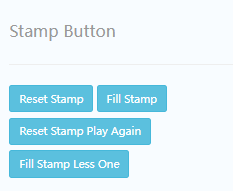
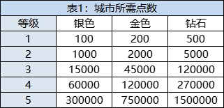
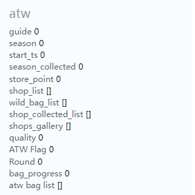

A activity
`在Admin网站修改任何数据，一定要确定好 “服务器端口” 选择的对不对！！！`
STAMPS
描述
STAMPS
描述

Genie 灯神
data:
{"genie_bonus_a":
{"available": 0,
"task_type": 11,
"game_prize": {},
"level": 0,
"season": 0,
"current": 0,
"game_disconnection": {},
"reset_ts": 1659672000,
"target_special": 0,
"target": 6},
"genie_bonus_b":
{"available": 1,
"task_type": 10,
"game_prize": {},
"level": 0,
"season": 0,
"current": 0,
"game_disconnection": {},
"reset_ts": 1659585600,
"target_special": 0,
"target": 6}}
BYD

Byd free_chest_ts: 首次免费领取建筑道具的时间戳
Byd chest_data: [Common:1, Rare:1, Epic:1, Legendary:1] BYD道具数量
Byd items_data: BYD建筑数据

BYD建筑数据:
[[建筑1],[建筑2],[建筑3],[建筑4],[.....],[建筑9]]共9个建筑
[建筑等级,建筑总经验,建筑宝箱领取时间]: 一个建筑的数据
Byd byd_start_ts:领取引导赠送depot道具的时间戳
Byd chest_exp:
Byd is_collected: BYD全建筑集齐收奖状态 0未收奖 or 1已收奖
BYD current_season: BYD赛季
BYD gallery [[], []]:历史赛季建筑完成度，每个[]内相当于一个赛季的Byd items_data数据
BYD_rank_building: 摩天大楼经验值
ATW

guide: 新手引导
season: 赛季
start_ts: 领取引导赠送bag道具的时间戳
season_collected:
store_point:
shop_list:
shop_list:
[[800,0],[1000,1],[1000,1]] :此数据为一个商店的3个道具list
`800` = 道具当前经验上限 ，`0` = `0`未收奖 or `1`已收奖
wild_bag_list:
shop_collected_list: 每个值对应每个商店的收奖状态 0未收奖 or 1已收奖
shops_gallery: [[], []]:历史赛季ATW商店完成度，每个[]内相当于一个赛季的shop_list数据
quality:
ATW Flag:
Round: 轮次
bag_progress:
atw bag list: [Common:1, Rare:1, Deluxe:1, Epic:1, Premium:1] ATW道具数量